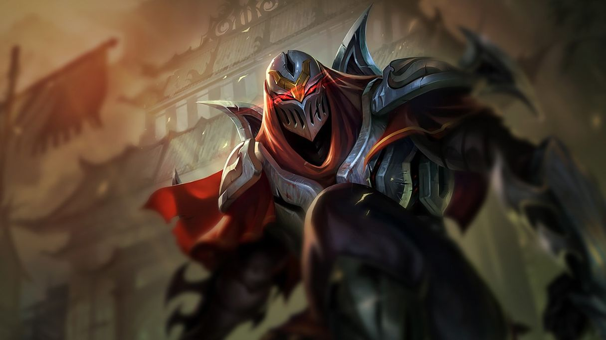
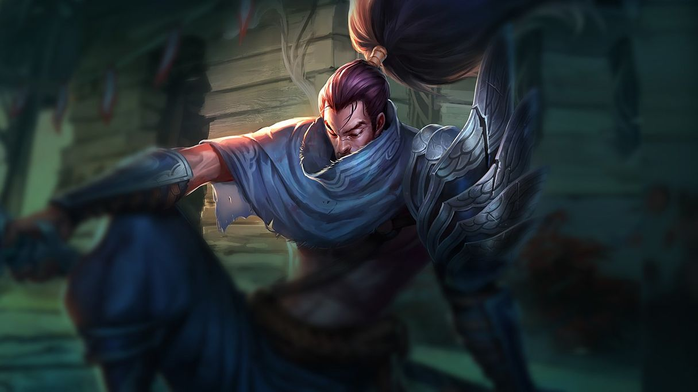
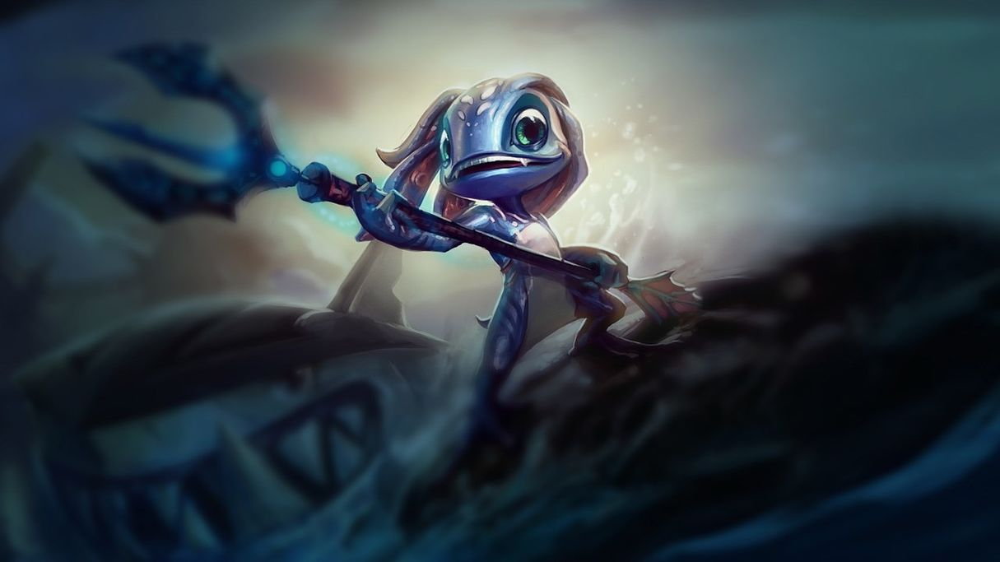
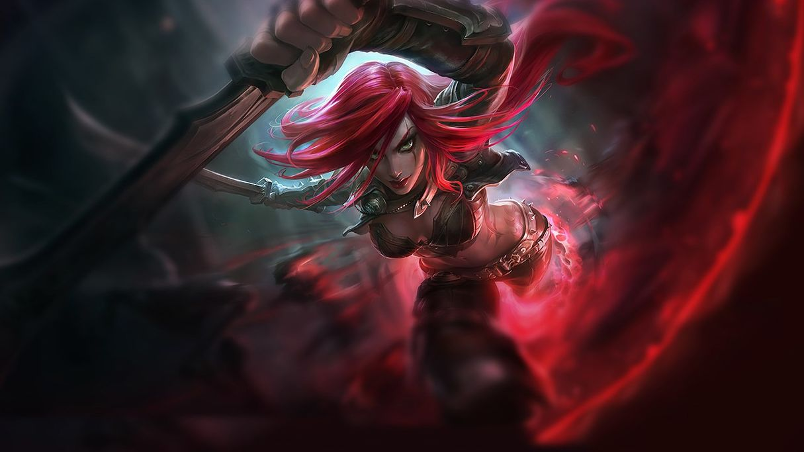

ZED
Utterly ruthless and without mercy, Zed is the leader of the Order of Shadow, an organization he created with the intent of militarizing Ionia’s magical and martial traditions to drive out Noxian invaders. During the war, desperation led him to unlock the secret shadow form–a malevolent spirit magic as dangerous and corrupting as it is powerful. Zed has mastered all of these forbidden techniques to destroy anything he sees as a threat to his nation, or his new order.

"Balance is a fool’s master."
YASUO
An Ionian of deep resolve, Yasuo is an agile swordsman, trained to wield the air itself against his enemies. As a young man, pride led him down a path of loss, costing him his position, his mentor, and ultimately his own brother. Disgraced by false accusations and now hunted as little more than a criminal, Yasuo wanders his homeland seeking redemption for his past, with only the wind to guide his blade.

"Death is like the wind–always by my side."
EKKO
A prodigy from the rough streets of Zaun, Ekko manipulates time to twist any situation to his advantage. Using his own invention, the Zero Drive, he explores the branching possibilities of reality to craft the perfect moment. Though he revels in this freedom, when there’s a threat to his friends he’ll do anything to defend them. To outsiders, Ekko seems to achieve the impossible the first time, every time.

"My devices work best when they don’t work as intended… which is most of the time."
FIZZ
Fizz is an amphibious yordle, who dwells among the reefs surrounding Bilgewater. He often retrieves and returns the tithes cast into the sea by superstitious captains, but even the saltiest of sailors know better than to cross him—for many are the tales of those who have underestimated this slippery character. Often mistaken for some manner of capricious ocean spirit, he seems able to command the beasts of the deep, and delights in confounding his allies and enemies alike.

"You people can’t even breathe water. You’re boring."
KATARINA
Born to one of the most respected noble families of Noxus, Katarina Du Couteau found herself elevated above others from an early age. While her younger sister Cassiopeia took after their politically brilliant mother, Katarina was very much her father’s daughter, and the wily General Du Couteau pushed her to learn the way of the blade; to cut away the empire’s enemies not with reckless brutality, but deadly precision. He was a harsh teacher with many pupils, and notoriously difficult to impress.

"Never question my loyalty. You will never know what I endure for it."
Simonas Poškus